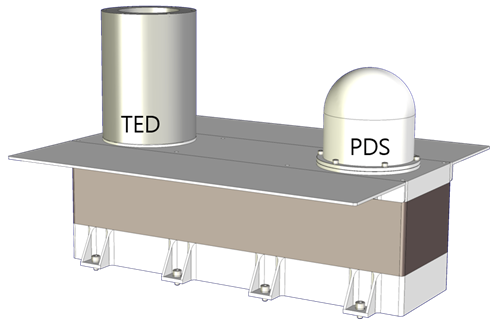
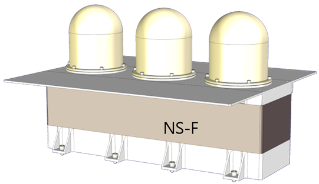
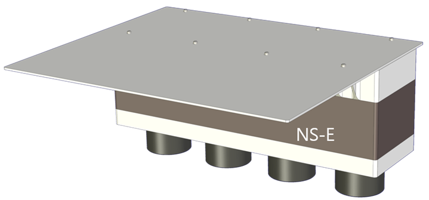

LVRAD
달 우주방사선 측정기 (LVRAD, 엘브이라드)는 달의 방사선 환경을
탐사합니다. 입자선량분광계(PDS, Particle Dosimeter and
Spectrometer)는 월면의 방사선량을 측정하고, 조직등가선량계(TED,
Tissue-Equivalent Dosimeter)는 달 방사선 환경이 생체 조직에 미치는
영향을 분석합니다. 고속 및 열외 중성자 분광계(NS-F & NS-E, Fast &
Epithermal Neutron Spectrometers)는 달 표면 아래의 수분 등을
탐색합니다.
LVRAD는 차세대소형위성 2호의
LEO-DOS(우주방사선 측정 선량검출기) 등의 개발 경험을 기반으로
합니다.



TED (왼쪽), PDS (오른쪽) 형상 모델
(천문연/서울대 제공) NS-F 형상 모델 (천문연/서울대 제공) NS-E 형상 모델 (천문연/서울대 제공)
(천문연/서울대 제공) NS-F 형상 모델 (천문연/서울대 제공) NS-E 형상 모델 (천문연/서울대 제공)